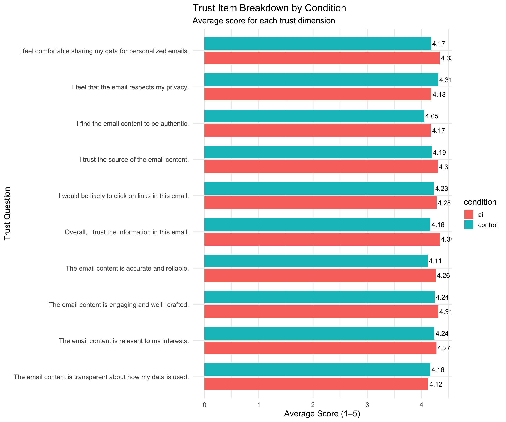

This page showcases the static dashboard I created in Module W10 using Quarto.
The goal of this dashboard is to communicate insights from my MSDM CEP project using clear visualizations and audience‑friendly storytelling.
Dashboard Code & Output
Below is the embedded dashboard from my CEP project.
Load cleaned trust dataset
library(tidyverse)
── Attaching core tidyverse packages ──────────────────────── tidyverse 2.0.0 ──
✔ dplyr 1.2.0 ✔ readr 2.1.6
✔ forcats 1.0.1 ✔ stringr 1.6.0
✔ ggplot2 4.0.1 ✔ tibble 3.3.1
✔ lubridate 1.9.5 ✔ tidyr 1.3.2
✔ purrr 1.2.1
── Conflicts ────────────────────────────────────────── tidyverse_conflicts() ──
✖ dplyr::filter() masks stats::filter()
✖ dplyr::lag() masks stats::lag()
ℹ Use the conflicted package (<http://conflicted.r-lib.org/>) to force all conflicts to become errors
path <-"~/Desktop/MEin3D CEP Project/MEin3D_TrustSurvey_CLEAN.csv"path_exp <-path.expand(path)file_exists <-file.exists(path_exp)dir_listing <-list.files(dirname(path_exp))trust_clean <-if (file_exists) { readr::read_csv(path_exp)} else {# diagnostic info returned so you can inspect why it's missinglist(path = path_exp, exists = file_exists, dir_listing = dir_listing,hint ="Verify the filename, folder name, or use file.choose() to select the file.")}
Rows: 130 Columns: 12
── Column specification ────────────────────────────────────────────────────────
Delimiter: ","
chr (1): condition
dbl (11): trust_1, trust_2, trust_3, trust_4, trust_5, trust_6, trust_7, tru...
ℹ Use `spec()` to retrieve the full column specification for this data.
ℹ Specify the column types or set `show_col_types = FALSE` to quiet this message.
trust_clean
# A tibble: 130 × 12
condition trust_1 trust_2 trust_3 trust_4 trust_5 trust_6 trust_7 trust_8
<chr> <dbl> <dbl> <dbl> <dbl> <dbl> <dbl> <dbl> <dbl>
1 control 3 3 3 3 3 3 3 3
2 ai 5 5 5 5 5 5 5 5
3 control NA 2 3 4 5 4 3 2
4 ai 5 5 5 5 5 5 5 5
5 control 2 2 3 NA 4 3 2 2
6 ai NA 2 3 5 2 4 3 NA
7 control NA NA NA 2 2 NA NA NA
8 control 5 5 5 5 5 NA NA NA
9 control 4 5 5 4 3 3 4 5
10 ai 3 2 4 5 3 2 4 3
# ℹ 120 more rows
# ℹ 3 more variables: trust_9 <dbl>, trust_10 <dbl>, trust_score_avg <dbl>
Lookup table: trust item → full question text
trust_labels <-tibble(item =paste0("trust_", 1:10),question =c("I find the email content to be authentic.","The email content is transparent about how my data is used.","I feel comfortable sharing my data for personalized emails.","The email content is relevant to my interests.","I trust the source of the email content.","The email content is accurate and reliable.","I feel that the email respects my privacy.","The email content is engaging and well‑crafted.","I would be likely to click on links in this email.","Overall, I trust the information in this email." ))
Insight AI‑personalized emails produced the highest average trust score, indicating that customers perceive AI‑generated content as slightly more trustworthy than the control email.
# Compute mean scores per question + conditiontrust_items_summary <- trust_items_long %>%group_by(question, condition) %>%summarize(mean_score =mean(score, na.rm =TRUE), .groups ="drop")# Plot with labelsggplot(trust_items_summary, aes(x = question, y = mean_score, fill = condition)) +geom_col(position =position_dodge(width =0.8), width =0.7) +geom_text(aes(label =round(mean_score, 2)),position =position_dodge(width =0.8),hjust =-0.1,size =4 ) +coord_flip() +scale_x_discrete(labels =function(x) stringr::str_wrap(x, width =40)) +labs(title ="Trust Item Breakdown by Condition",subtitle ="Average score for each trust dimension",x ="Trust Question",y ="Average Score (1–5)" ) +theme_minimal(base_size =14) +xlim(rev(levels(factor(trust_items_summary$question)))) # keeps order clean
Scale for x is already present.
Adding another scale for x, which will replace the existing scale.
Warning: Removed 2 rows containing missing values or values outside the scale range
(`geom_col()`).
Warning: Removed 2 rows containing missing values or values outside the scale range
(`geom_text()`).

Tip
Insight Across all 10 trust dimensions — including authenticity, transparency, and data comfort — the AI‑personalized email consistently performs as well as or better than the control email.
📝 Executive Summary - What This Means for MEin3D
The dashboard shows that AI‑generated email content performs on par with human‑written messaging in terms of trust. Customers rate both emails as similarly trustworthy, meaning MEin3D can safely adopt AI‑powered personalization without risking customer confidence. This supports shifting toward automated, scalable email workflows that reduce production time while maintaining strong customer perception.